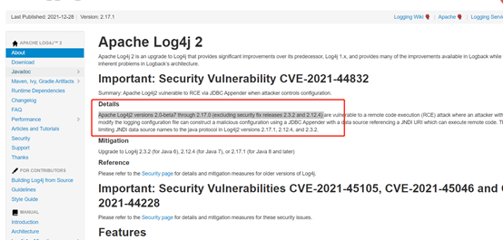
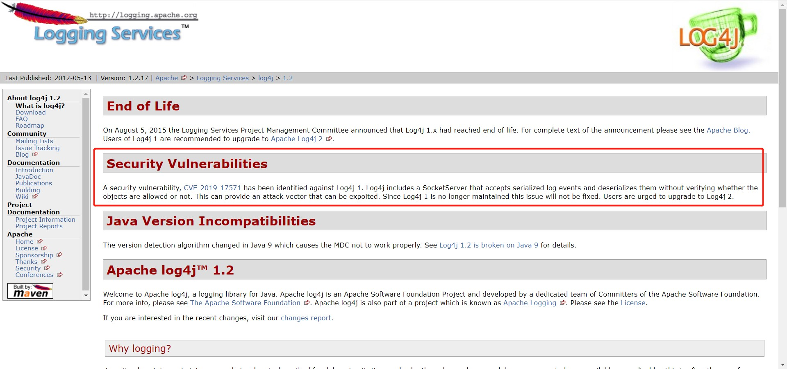
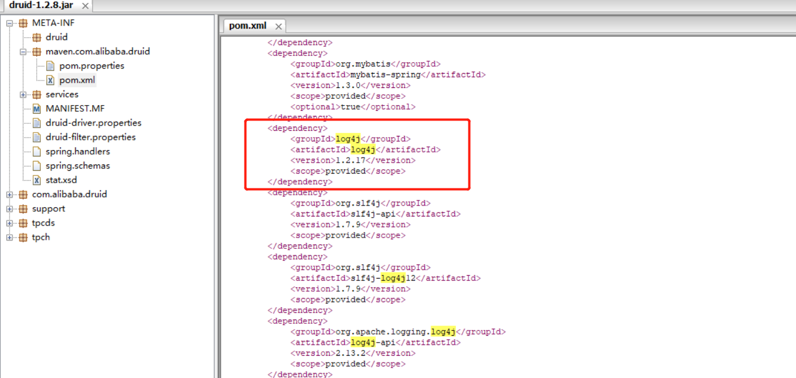

摘要
近期爆发的关于log4j漏洞本质上是RCE（远程命令执行漏洞），涉及log4j的版本为log4j2 2.0-beta7 ~ 2.17.0 (不包括2.3.2 and 2.12.4)
公司系统引入alibaba druid 1.0.18作为数据连接池组件，而alibaba druid 1.0.18引入 log4j 1.2.17作为日志组件， 本质上log4j 1.2.17的版本与这次RCE漏洞并不相干，但1.2.17本身存在日志事件的序列化漏洞，针对序列化漏洞，我们可以采取禁止log4j 1.2.17中SocketServer类启用端口或启用端口不对外开放的手段规避，若省公司网信安承认我们针对序列化漏洞的规避手段，可避免大动干戈的jar包升级，若不承认，则需更换数据连接池组件。
【参考log4j官方文档】https://logging.apache.org/log4j/2.x/

log4j 1.2.17 本身存在的问题
log4j 1.2.17 已于2015.08.05停止维护，时至今日已被发现的漏洞为日志事件的序列化漏洞
【log4j官方文档】https://logging.apache.org/log4j/1.2/

日志事件的序列化漏洞整改建议：
临时手段：
禁止log4j 1.2.17中SocketServer类启用端口或启用端口不对外开放
官方建议：
升级至log4j 2.8.2以上版本
下载链接：https://logging.apache.org/log4j/2.x/download.html
jar包升级的潜在问题
Alibaba druid最新jar包版本1.2.8中依旧依赖log4j 1.2.17的库，若强制升级log4j版本，只能放弃druid更换数据库连接池组件。
